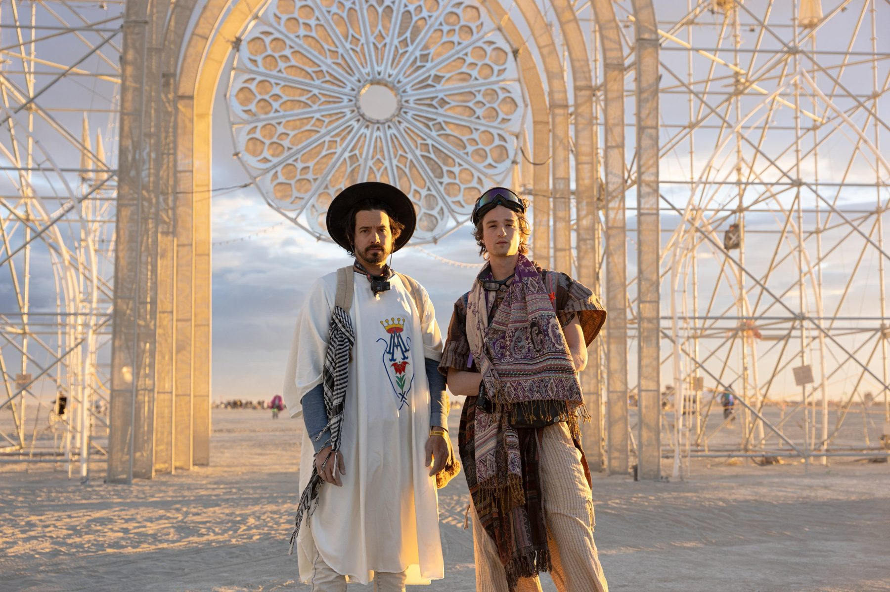

About
A space for all people…
The Gothic Folly recasts the emotional power of sacred architecture in scaffolding and light.
Rising sixty feet above the playa, the Gothic Folly draws on the soaring arches, verticality and intricate tracery of Gothic cathedrals, and builds them from utilitarian materials as a monument to wonder.
By day, its open structure frames vast stretches of sky and casts shifting shadows across the desert floor. At night it becomes a beacon on the horizon, giving off light and music and welcoming you in.
What was once designed for doctrine becomes a space for collective devotion, directed outward toward one another instead of upward toward a single authority. Devotion to art, to community, to curiosity, to celebration, to whimsy. The Folly asks what a cathedral might be when all are welcome, and everything is sacred.
At the heart of the project is a belief that architecture is a universal language, one that crosses nationality, culture, religion and spoken words. Long before we understand a place, we feel it. We are drawn upward by height, humbled by scale, comforted by light and changed by beauty.
Built in one of the world's most impermanent landscapes, the work makes a place for gathering, celebration, reflection and awe. All are welcome to step into a cathedral that is theirs, and to feel whatever arises.

The artists
Alex Noerpel & Hunter Keene
Two multidisciplinary artists from New York whose work spans architecture, Broadway carpentry, scenic design, graphic design, printmaking, painting, street art and fashion. The Folly is the culmination of a lifelong fascination with the emotional power of space.
Day and night
One structure, two faces
By day you see the scaffolding: a rigid grid of towers, spires and bracing against the sky. By night the grid falls away into the dark, and the light picks out its curves: the pointed arches and the rose window.
The structure
Scaffolding, arches and light
A central rose window of mesh and LEDs hangs suspended between two main towers. Four spires define the facades, draped with canopy lights that highlight the roof lines, and cascading pointed arches form the nave. Every member is lit, so the whole structure can be played as one instrument.
| Height | 60 ft to the spire tips |
|---|---|
| Envelope | Approx. 36.5 × 28.3 × 19.2 m |
| Frame | Scaffolding towers, four spires, cascading pointed arches, suspended rose window of mesh and LEDs, canopy lights |
| Light | 35,900 programmable LEDs |
| Control | Folly Mix on a phone, iPad or tablet, over sACN or DDP to a Falcon F48V5 controller |
| Fabrication | New York City, by a core crew of 20 |
Credits
Additional hands
Thank you to everyone who built, wired, rigged, cooked, hauled and dreamed it into being.
- John Keefe (Nick)Lighting system lead
- Marie Gilot (Nora)Light show designer
- Jeff TanRigging lead
- DJ RufoLogistics lead
- Liz HansenQuartermaster
- Trevor KirschenheiterLighting and Electrics
- Mark SLighting and Electrics
- Nicolas HerreraLighting and Electrics
- Santiago MarinCrew
- Markus WinklerCrew
- Colleen MurphyCrew
- Anton IvanovCrew
- Vesper SyndCrew
- Natalia AntonovaCrew
- Tony WoodCrew
- James GreenCrew